Niewolnictwo
Większość historyków amerykańskich uznaje spór o niewolnictwo za główną przyczynę wybuchu wojny secesyjnej.
Ruch abolicjonistyczny*
nie cieszył się wystarczającym poparciem na Północy, aby radykalne reformy wydawały się realnym rozwiązaniem i politycy północnych stanów kierowali się na tym etapie głównie pragnieniem zachowania Unii. Południe czuło się jednak zagrożone i ogłosiło
secesję*
, mając na celu przede wszystkim obronę instytucji niewolnictwa
Sam Abraham Lincoln napisał w pojednawczym liście do przyszłego wiceprezydenta Konfederacji, Alexandra Stephensa, jeszcze w grudniu 1860 r.:
"Uważacie, że niewolnictwo jest słuszne i powinno być rozszerzone; my uznajemy niewolnictwo za złe i wymagające ograniczenia. To jest jak myślę istota problemu. Jest to z pewnością jedyna istotna różnica pomiędzy nami."
Kluczowymi punktami wojny stała się
Proklamacja Emancypacji*
oraz uchwalenie
13. poprawki do Konstytucji USA*
, które uwalniały niewolników i delegalizowały niewolnictwo. W trakcie drugiej kadencji, Abraham Lincoln cieszył się już dużym poparciem i otwarcie nawoływał do abolicji niewolnictwa
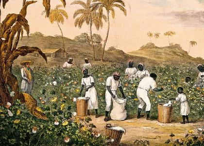
Gospodarka stanów południowych była uzależniona od pracy przymusowej i na niej opierała swoje funkcjonowanie. Szczególnie ważna była uprawa bawełny, na której swój dobrobyt budowali plantatorzy. Bez prawie darmowej, niewolniczej siły roboczej bawełna z południowych stanów znacznie by podrożała. Pomimo że niewolnictwo na północy było zabronione, tylko mała grupa mieszkańców tej części kraju stanowczo się mu sprzeciwiała. Ruch abolicjonistyczny wprawdzie istniał, ale nie miał szerokiego poparcia
Różnica spoczełne i ekonomiczne
Na początku lat sześćdziesiątych XIX wieku północ i południe Stanów Zjednoczonych były dwoma całkowicie różnymi regionami. Różne poglądy na politykę, ekonomię i sprawy społeczne miały swój początek jeszcze w czasach kolonialnych, a z biegiem czasu różnice te coraz bardziej przybierały na sile. Choć dzięki licznym kompromisom udawało się utrzymać Unię jako całość przez wiele lat, w roku 1860 nastroje w obu częściach kraju były bardzo gorące.
W pierwszej połowie XIX wieku różnice ekonomiczne pomiędzy regionami jeszcze bardziej się pogłębiały. Bawełna stanowiła większość eksportu USA co tylko umacja zależność połódnia od niewolnictwa.
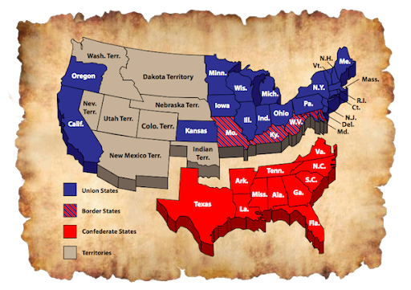
Północ była natomiast obszarem wysoce uprzemysłowionym. Istniało duże zapotrzebowanie na pracowników, ponieważ przemysł potrzebował wykwalifikowanej siły roboczej, której niewolnicy jednak nie stanowili. Zachęcano więc do imigracji Europejczyków, którzy chętnie z tej okazji korzystali i przyczyniali się do rozwoju tej części kraju. Natomiast imigracja do stanów południowych miała bardzo ograniczony charakter.
Społeczeństwo południa pozostało w większości bardzo konserwatywne i przywiązane do tradycyjnych wartości, na północy natomiast dominowały nowe idee liberalne i kapitalistyczne. To właśnie w stopniu industrializacji leżały przyczyny konfliktu.
Początek wojny secesyjnej
Pod koniec 1860 roku wybuch otwartego konfliktu był już tylko kwestią czasu
W styczniu 1861 roku prezydent James Buchanan polecił wysłać posiłki do
Fortu Sumter*
, dowodzonego przez majora Roberta Andersona. „Gwiazda Zachodu” – statek na który załadowano zaopatrzenie dla Fortu Sumter – był nieuzbrojonym statkiem handlowym. Kiedy konfederackie baterie dział, znajdujące się w zatoce Charleston, ostrzelały go, statek odpłynął z powrotem. Lincoln podczas swojego pierwszego dnia urzędowania został poinformowany, że zapasy w oblężonej przez konfederatów twierdzy starczą jedynie na miesiąc. Jednak poddanie Fortu Sumter, który stał się teraz symbolem Unii, byłoby złamaniem przysięgi prezydenckiej.
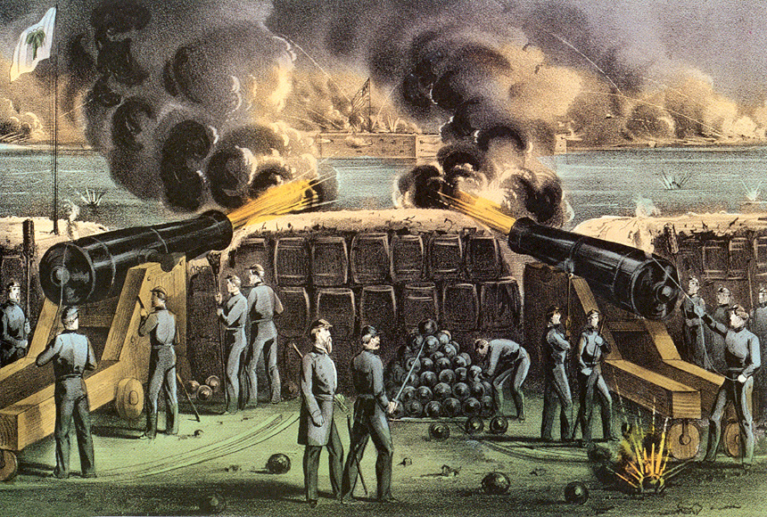
Działania wojenne na wschodzie
Opór, jaki stawiły wojska Południa, okazał się wyjątkowo silny. Siły konfederackie pod dowództwem generałów Josepha Johnstona i P.G.T. Beauregarda znajdowały się wówczas w Manassas w Wirginii. W lipcu 1861 wojska Unii pod dowództwem generała majora Irvina McDowella zostały zatrzymane nad Bull Run, gdzie została stoczona pierwsza bitwa tej wojny. Wojska Północy poniosły tu sromotną klęskę i w popłochu wycofały się z powrotem do Waszyngtonu.
Kongres Stanów Zjednoczonych w obawie, aby inne stany nie wystąpiły z Unii, wydał 25 lipca tzw. rezolucję Crittendena-Johnsona, która mówiła, że wojna toczy się w obronie istnienia Unii, a nie o zniesienie niewolnictwa.
Następnie Robert E. Lee pokonał McClellana w bitwie siedmiodniowej i zmusił go do odwrotu. McClellan, który stracił dużą część swoich wojsk, nie mógł przyjść na odsiecz drugiej armii Unii, dowodzonej przez Johna Pope’a, która poniosła porażkę w walce z wojskami konfederackimi dowodzonymi przez Roberta E. Lee. w północnej Wirginii w II bitwie nad Bull Run w sierpniu 1862 roku
Wzmocnieni drugą wygraną konfederaci zaatakowali północ 55-tysięczną Armią Północnej Wirginii pod dowództwem Lee. 5 września przekroczyli rzekę Potomak i dostali się do Marylandu. Lincoln polecił połączyć armię Pope’a z armią McClellana. Do starcia doszło 17 września 1862 roku nad rzeką Antietam w pobliżu Sharpsburga w stanie Maryland. Armia Lee poniosła porażkę, ale wycofała się z łatwością dzięki odwlekaniu decyzji ataku przez McClellana, który mógł zniszczyć armię konfederatów. Taktycznie bitwa była remisem. Strategicznie i politycznie była to klęska Konfederacji, ponieważ wojskom Unii udało się powstrzymać jej ofensywę, przekreślona została także nadzieja Południa na uznanie niepodległości przez Francję i Wielką Brytanię. Dzięki temu zwycięstwu Lincoln poczuł się mocniejszy i mógł ogłosić tzw. „Proklamację Emancypacji”
Lee raz jeszcze podjął próbę opanowania północy, jednak został pokonany w najkrwawszej i największej bitwie wojny secesyjnej pod Gettysburgiem, która toczyła się w dniach od 1 do 3 lipca 1863. Bitwa ta okazała się punktem zwrotnym w całej wojnie, bo odtąd inicjatywę przejęły całkowicie wojska Unii. Armia Lee straciła 28 tys. ludzi – zabitych, rannych i wziętych do niewoli, oraz została zmuszona do odwrotu do Wirginii i już nigdy więcej nie zagroziła bezpośrednio Waszyngtonowi.
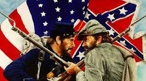
Działania wojenne na zachodzie
Podczas gdy armie konfederatów odnosiły na wschodzie zwycięstwa jedno za drugim, sytuacja na zachodzie była całkowicie odmienna. Konfederaci zostali wyparci z Missouri już na początku wojny w wyniku bitwy pod Pea Ridge. Najazd Leonidasa Polka na Kentucky we wrześniu 1861 roku zmusił mieszkańców, którzy poprzednio opowiadali się za neutralnością, do opowiedzenia się przeciw Konfederacji
Po wkroczeniu sił Unii do Kentucky, w lutym 1862 roku wojska gen. Granta ruszyły na graniczący z nim od południa stan Tennessee. Na zachodnim teatrze działań istotne dla Unii było zdobycie panowania nad rzeką Missisipi, która oddzielała skonfederowane stany wschodnie od zachodnich stanów rolniczych i stanowiła naturalny i najlepszy układ komunikacyjny z południa na północ. Większa część Missisipi została otwarta dla Unii dzięki czemu w lipcu, po zdobyciu Memphis, okręty Unii zmierzające od góry i od dołu rzeki, spotkały się. Tylko ufortyfikowane miasto Vicksburg pozostawało niezdobyte i uniemożliwiało zapanowaniem nad całym dorzeczem Missisipi
Jedynym bezspornym zwycięstwem konfederatów na zachodzie była bitwa nad Chickamaugą w Georgii przy granicy z Tennessee, gdzie Bragg posiłkowany przez Jamesa Longstreeta pokonał Rosecransa pomimo bohaterskiej obrony George’a H. Thomasa i zmusił go do odwrotu do Chattanoogi, która została natychmiast przez Bragga oblężona
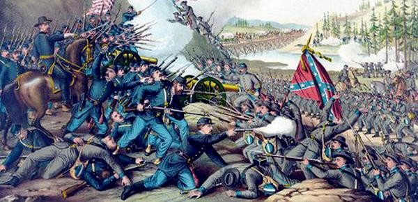
Koniec wojny
1864 - W tym okresie siły Unii próbowały uchwycić kontakt z Lee i stoczyły kilka bitew. Próba uderzenia przez Butlera z południa nie powiodła się, a on sam znalazł się w pułapce w tzw. „zakolu stu rzek”. Grant dalej uparcie próbował zniszczyć Lee pomimo ogromnych strat i ciągle deptał mu po piętach. Udało mu się osaczyć Lee pod Petersburgiem. Starcia te zamieniły się w wojnę pozycyjną z licznymi okopami i umocnieniami, a trwały ponad 9 miesięcy.
Po dwóch nieudanych próbach (pod Sigelem i Hunterem) osiągnięcia kluczowych punktów doliny Shenandoah, Grant w końcu znalazł odpowiedniego człowieka do wykonania tego zadania. Philip Sheridan okazał się wystarczająco agresywny, aby przeważyć szalę kampanii na korzyść Unii w 1864. Teraz najważniejszym zadaniem Sheridana było zniszczenie wojsk Jubala Early’ego, którego siły dotarły w pobliże Waszyngtonu. Early został pokonany w serii kilku bitew, łącznie z ostatnią pod Cedar Creek. Następnie Sheridan kontynuował niszczenie bazy rolniczej i przemysłowej w dolinie Shenandoah, stosując taktykę spalonej ziemi, tak jak później robił to Sherman w Georgii
Skutki
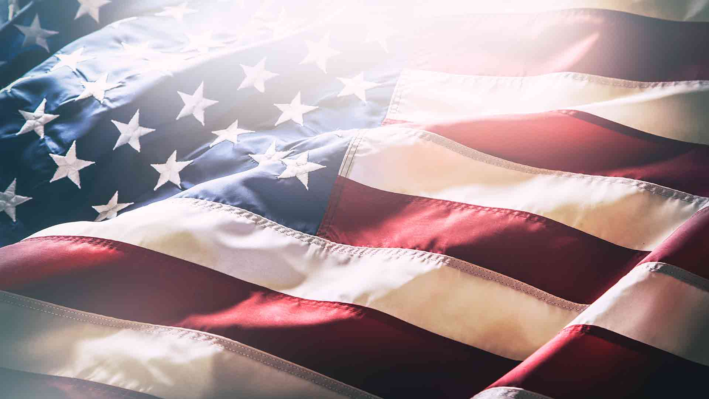Ostatecznie z wojny secesyjnej zwycięzko wyszła Unia. Niestety te lata zostawiły za skobą spustoszenie gospodarcze i moralne kraju, olbrzymie straty demograficzne po obu stronach. Połacie rolnicze będące na Południu zostały w większej części wyniszczone, co dramatycznie wpłynęło na najważniejszą rolę tej części kraju, czyli agrokultury. W zamian za to rozwój przemysłu Stanów Zjednoczonych zaczął się szybko rozwujać.
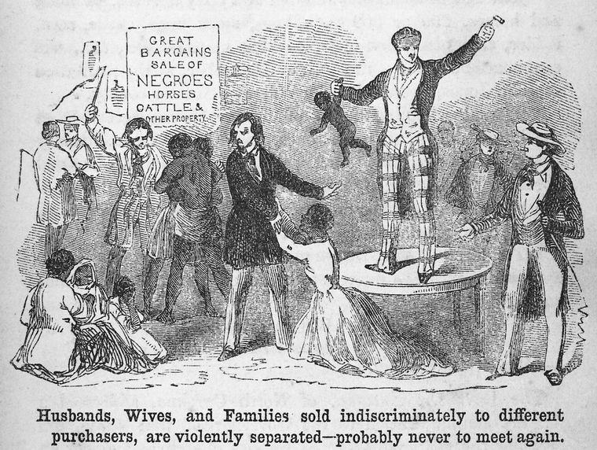
Jak z początku planowano niewolnictwo zostało zniesione, co zostało wprowadzone do konstytucji w 1865 roku. Niestety było to początkiem innych problemów. Osoby czarnoskure zaczęły być prześladowane. Powstał także w 1866 Ku-Klux-Klan, który walczyli o to, aby czarnoskórzy nie dostali "za dużo" przywilei
Abraham Lincoln
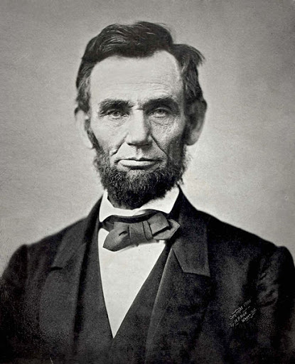Amerykański polityk żył od 1809r. Szesnasty prezydent Stanów Zjednoczonych Ameryki, uczestnik wojny Czarnego Jastrzębia. Zasiadał przez dwa lata jako przedstawiciel Partii Wigów w Izbie Reprezentantów. W 1860 roku z sukcesem ubiegał się o nominację Partii Republikańskiej na urząd Prezydenta Stanów Zjednoczonych. W głosowaniu powszechnym zwyciężył i piastowanie urzędu rozpoczął 4 marca 1861 roku. Trzy lata później ponownie został kandydatem partii na urząd prezydenta i został wybrany na drugą kadencję. Jego życie i prezydentura zakończyła się 15 kwietnia 1865 roku śmiercią w wyniku zamachu dokonanego przez Johna Wilkesa Bootha.
Thomas Jackson "Stonewall"
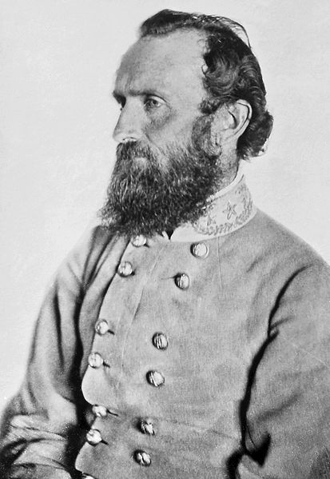Generał konfederacki, żył w latach (1824-1863). Przydomek "Stonewall" otrzymał po I bitwie nad Bull Run, gdzie jego oddziały dla wojs Unii były niczym "kamienna ściana" (ang. stone wall)
Gore McClellan
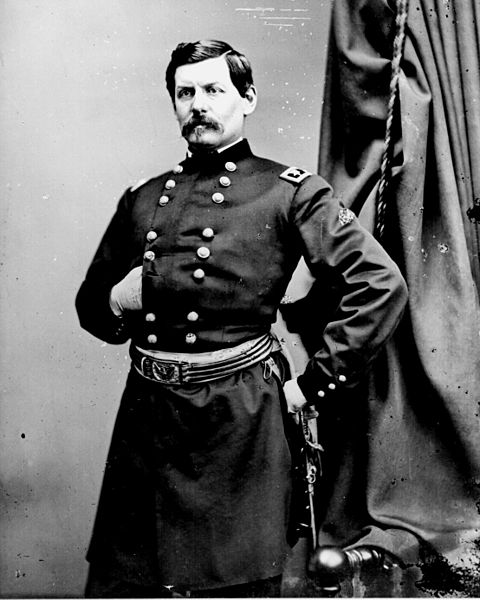Amerykański wojskowy, generał major podczas wojny secesyjnej. Na jej początku odegrał istotną rolę w mobilizacji dobrze wyszkolonej i zorganizowanej armii dla Unii. Sformował Armię Potomaku, a od listopada 1861 do marca 1862 był głównodowodzącym Armii Unii.
Robert Edward Lee
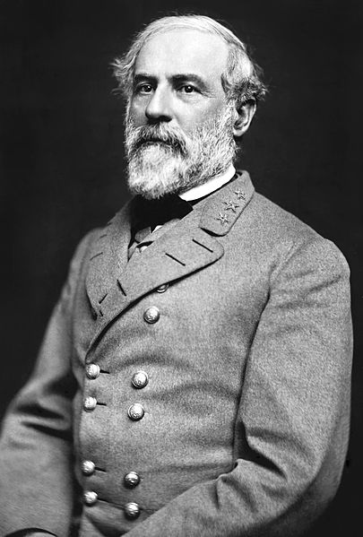(ur 1807, zm 1870) Amerykański inżynier i wojskowy, pułkownik kawalerii Armii Stanów Zjednoczonych oraz generał Armii Stanów Skonfederowanych (CSA) w czasie trwania wojny secesyjnej, a w późniejszym okresie mianowany głównodowodzącym wojsk Konfederacji.
Ulysses Grant
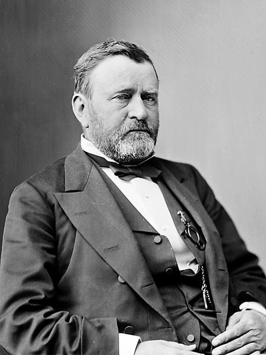(ur 1922, zm 1885) Amerykański generał, osiemnasty prezydent USA. Był głównym sprawcą sukcesów wojsk Unii na zachodzie. Zwycięsko wychodził z wielu bitew min. pod Fotrem Donelson, zdobył kontrolę nad Tennessee i rzeką Cumberland.
Włodzimierz Krzyżanowski
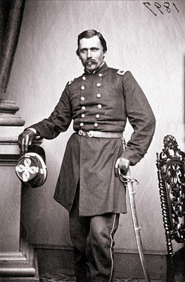Włodzimierz Krzyżanowski był dowódcą Legionu Polskiego i zyskał za swoją służbę wyrazy uznania. Na początku zgłosił się do wojska jako szeregowy. Później spełniał już poważniejszą rolę przy rekrutacji małego oddziału, znanego jako Kompania Krzyżanowskiego, następnie został awansowany do rangi majora. W 1861 sekretarz wojny Cameron zlecił mu sformowanie oddziałów polskich z osób narodowości polskiej, zamieszkujących Unię. Krzyżanowskiemu udało się znaleźć 400 mężczyzn, z których utworzono regiment o nazwie „United States Rifles”. Początkowo jednostka ta operowała jako niezależna i ochotnicza część armii Unii. Później została scalona ze strzelcami Morgana, a ostatecznie został z niej uformowany 58. pułk nowojorski. Nazywano ją Legionem Polskim, ponieważ większość jego żołnierzy była potomkami polskich imigrantów.
Do góry